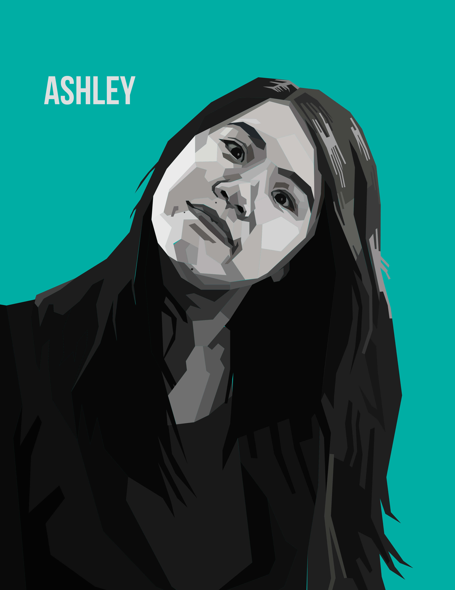

An avid painter and learner, I began oil painting at an early age. I began by studying the landscapes and portraits of Renaissance artists, and created original paintings after this exposure. This facilitated my eventual transition into digital art and design.
Wedha's Pop Art Portraiture (WPAP) refers to a trend originating in Indonesia. Characterized by brightly colored polygons, it requires a careful balance of shapes, colors, and contrast. My interest in oil and pencil portraiture led me to this style.
Still Life of Wildflowers (Oil)

My Grandmother (Oil)

Portrait of Ashley (WPAP)
Just Be Christina Be (WPAP)